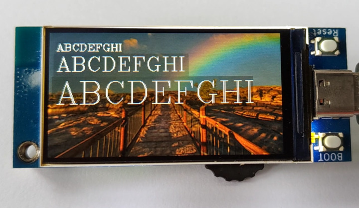

2023-11-01
显示多种矢量字体
draw 方法
draw(vector_font, s, x, y {, fg, scale, alpha})
绘制 s 文本到显示器，使用指定的Hershey矢量字体，坐标为文本的左下角。文本的前景色可以由可选参数fg设置，默认前景色为白色。文本的大小可以通过指定scale比例值进行缩放。scale必须大于0，可以是浮点数或整数值。scale默认为1.0。alpha透明度默认为255。
draw_len 方法
draw_len(vector_font, s {, scale})
返回使用指定字体绘制的 s 字符串在像素中的宽度。
下载矢量字体库
在GitHub:russhughes/st7789s3_esp_lcd/fonts/vector仓库中有py文件格式的矢量字体库，在README中有所有字体的图样。
在例程的lib中则还能下载到已转化为mpy文件格式的矢量字体库，占用更少的flash空间。
显示多种矢量字体并连续刷新
通过 draw_len 方法可以获取将要显示的字符串宽度，但已提供的部分矢量字体的高度会超过设定值，如果需要保持文本框完全覆盖它，则需要修改相应代码，增加文本框的高度。


""" BPI-Centi-S3 170x320 ST7789 display """
import st7789
import tft_config
import gotheng
import italicc
import romanc
import time
import gc
from math import ceil
"""
These default colors can be used:
BLACK BLUE CYAN GREEN
MAGENTA RED YELLOW WHITE
TRANSPARENT
Custom RGB colors:
color565(255,255,255)
"""
class DrawRect:
def __init__(self):
self.tft = None
self.text_y = None
self.text_x = None
self.rect_x = None
self.rect_y = None
self.rect_height = None
self.rect_width = None
def rect(self, tft, vector_font, scale, text, text_coord,
fg=st7789.WHITE, bg=st7789.BLACK, alpha_text=255, alpha_rect=255):
self.tft = tft
self.rect_width = self.tft.draw_len(vector_font, text, scale)
self.rect_height = ceil(vector_font.HEIGHT * scale)
self.text_x = text_coord[0]
self.text_y = text_coord[1]
self.rect_x = ceil(self.text_x - vector_font.WIDTH * scale / 8)
self.rect_y = round(self.text_y - vector_font.HEIGHT * scale / 2 + 1)
self.tft.fill_rect(self.rect_x, self.rect_y,
self.rect_width, self.rect_height, bg, alpha_rect)
self.tft.draw(vector_font, text, self.text_x, self.text_y,
fg, scale, alpha_text)
def erase(self, bg):
buffer, _, _ = self.tft.jpg_decode(bg, self.rect_x, self.rect_y, self.rect_width, self.rect_height)
self.tft.blit_buffer(buffer, self.rect_x, self.rect_y, self.rect_width, self.rect_height)
def main():
try:
tft = tft_config.config(rotation=1)
tft.init()
jpg = 'pic_4.jpg'
tft.jpg(jpg, 0, 0)
text_x = 10
text_y = 20
text_list = [
" !\"#$%&'()*+,-./",
"0123456789:;<=>?",
"@ABCDEFGHIJKLMNO",
"PQRSTUVWXYZ[\]^_",
"`abcdefghijklmno",
"pqrstuvwxyz{|}~",
]
draw_rect_1 = DrawRect()
draw_rect_2 = DrawRect()
draw_rect_3 = DrawRect()
while True:
for i in text_list:
draw_rect_1.rect(tft, gotheng, 0.8, i, (text_x, text_y),
fg=st7789.WHITE, bg=st7789.BLACK, alpha_text=255, alpha_rect=20)
draw_rect_2.rect(tft, italicc, 0.8, i, (text_x, text_y+32),
fg=st7789.WHITE, bg=st7789.BLACK, alpha_text=255, alpha_rect=40)
draw_rect_3.rect(tft, romanc, 0.8, i, (text_x, text_y + 64),
fg=st7789.WHITE, bg=st7789.BLACK, alpha_text=255, alpha_rect=60)
tft.show()
time.sleep(0.5)
draw_rect_1.erase(bg=jpg)
draw_rect_2.erase(bg=jpg)
draw_rect_3.erase(bg=jpg)
gc.collect()
except BaseException as err:
err_type = err.__class__.__name__
print('Err type:', err_type)
from sys import print_exception
print_exception(err)
finally:
tft.deinit()
print("tft deinit")
main()
放大或缩小字体
修改 draw 方法的 scale 比例值即可控制字体大小。

""" BPI-Centi-S3 170x320 ST7789 display """
import st7789
import tft_config
import gotheng
import italicc
import romanc
import time
import gc
from math import ceil
"""
These default colors can be used:
BLACK BLUE CYAN GREEN
MAGENTA RED YELLOW WHITE
TRANSPARENT
Custom RGB colors:
color565(255,255,255)
"""
class DrawRect:
def __init__(self):
self.tft = None
self.text_y = None
self.text_x = None
self.rect_x = None
self.rect_y = None
self.rect_height = None
self.rect_width = None
def rect(self, tft, vector_font, scale, text, text_coord,
fg=st7789.WHITE, bg=st7789.BLACK, alpha_text=255, alpha_rect=255):
self.tft = tft
self.rect_width = self.tft.draw_len(vector_font, text, scale)
self.rect_height = ceil(vector_font.HEIGHT * scale)
self.text_x = text_coord[0]
self.text_y = text_coord[1]
self.rect_x = ceil(self.text_x - vector_font.WIDTH * scale / 8)
self.rect_y = round(self.text_y - vector_font.HEIGHT * scale / 2 + 1)
self.tft.fill_rect(self.rect_x, self.rect_y,
self.rect_width, self.rect_height, bg, alpha_rect)
self.tft.draw(vector_font, text, self.text_x, self.text_y,
fg, scale, alpha_text)
def erase(self, bg):
buffer, _, _ = self.tft.jpg_decode(bg, self.rect_x, self.rect_y, self.rect_width, self.rect_height)
self.tft.blit_buffer(buffer, self.rect_x, self.rect_y, self.rect_width, self.rect_height)
def main():
try:
tft = tft_config.config(rotation=1)
tft.init()
jpg = 'pic_4.jpg'
tft.jpg(jpg, 0, 0)
text_x = 10
text_y = 20
text_list = [
"!\"#$%&'()*",
"0123456789",
"ABCDEFGHI",
"PQRSTUVWX",
"abcdefghij",
"pqrstuvwxy",
]
draw_rect_1 = DrawRect()
draw_rect_2 = DrawRect()
draw_rect_3 = DrawRect()
while True:
for i in text_list:
draw_rect_1.rect(tft, romanc, 0.5, i, (text_x, text_y),
fg=st7789.WHITE, bg=st7789.BLACK, alpha_text=255, alpha_rect=20)
draw_rect_2.rect(tft, romanc, 1, i, (text_x, text_y+24),
fg=st7789.WHITE, bg=st7789.BLACK, alpha_text=255, alpha_rect=40)
draw_rect_3.rect(tft, romanc, 1.5, i, (text_x, text_y + 64),
fg=st7789.WHITE, bg=st7789.BLACK, alpha_text=255, alpha_rect=60)
tft.show()
time.sleep(0.5)
draw_rect_1.erase(bg=jpg)
draw_rect_2.erase(bg=jpg)
draw_rect_3.erase(bg=jpg)
gc.collect()
except BaseException as err:
err_type = err.__class__.__name__
print('Err type:', err_type)
from sys import print_exception
print_exception(err)
finally:
tft.deinit()
print("tft deinit")
main()